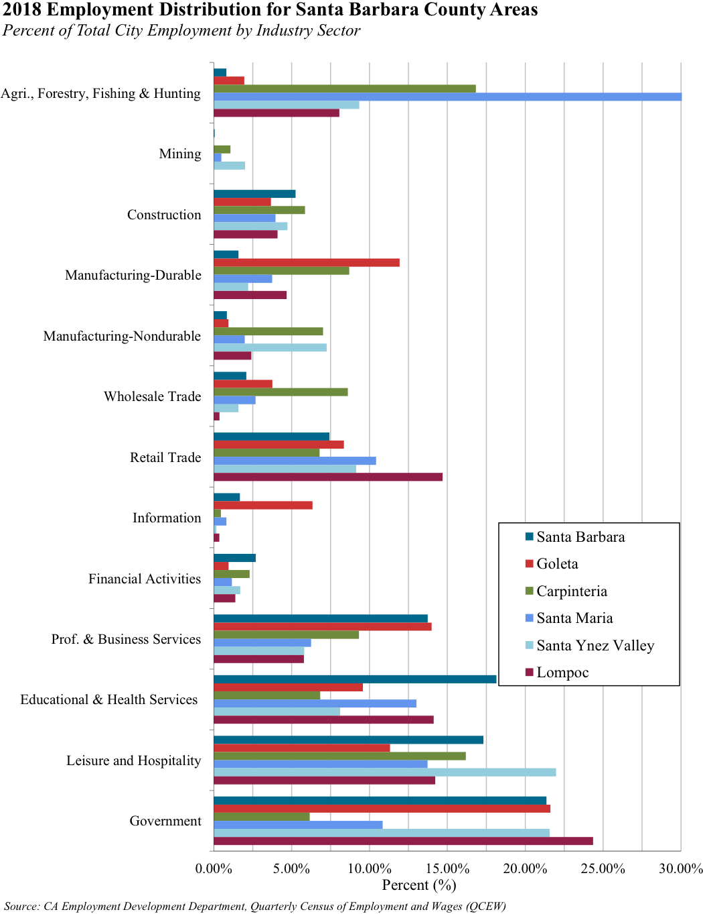
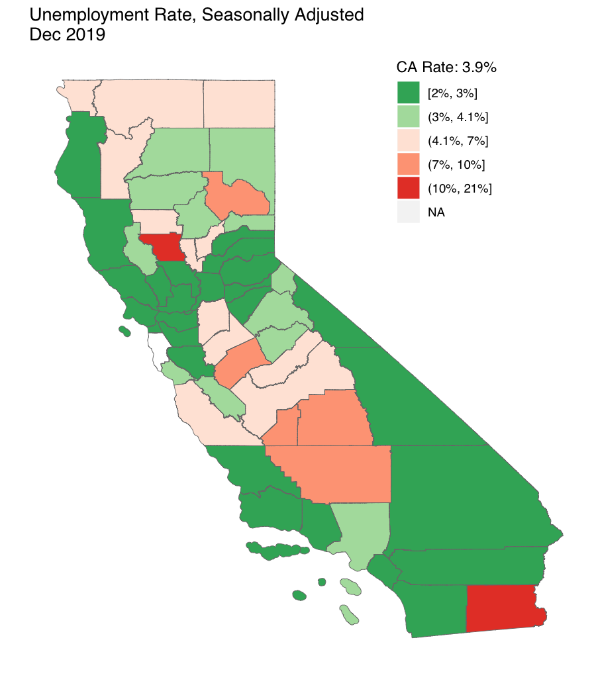
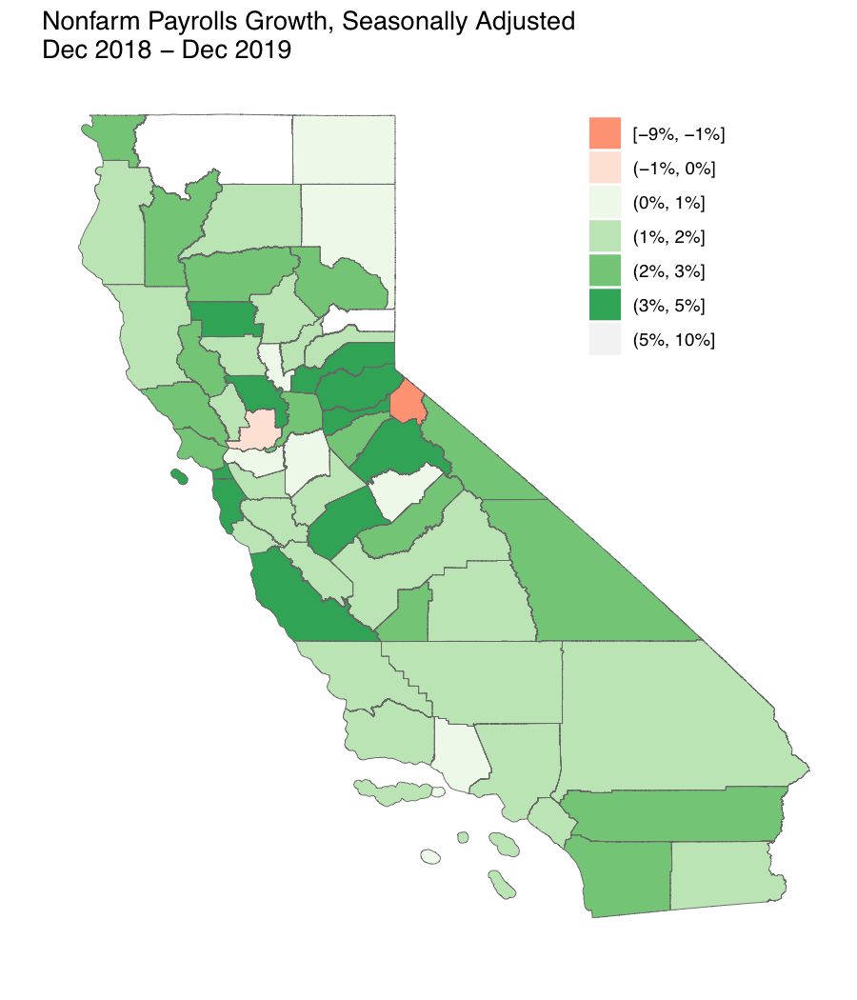
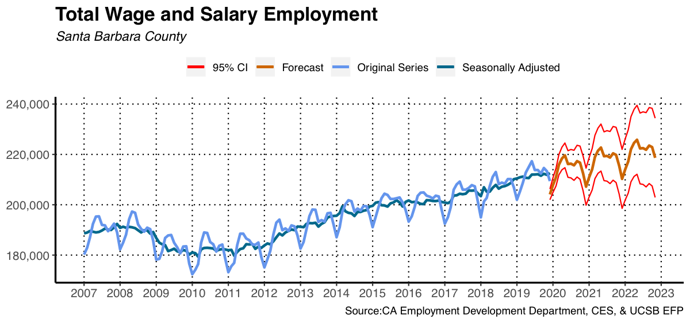
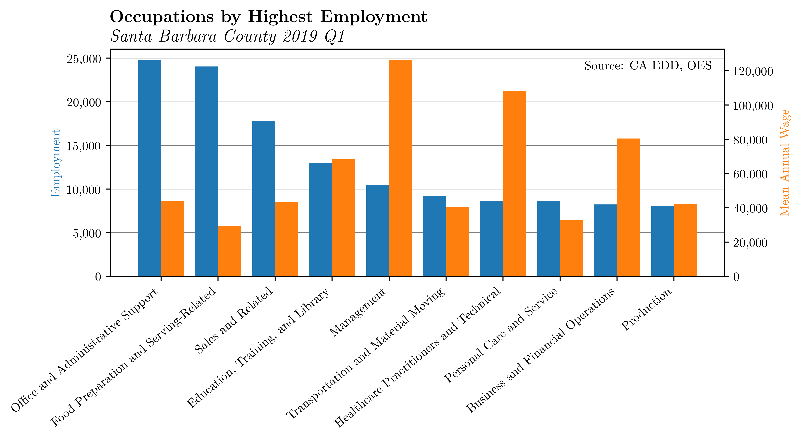
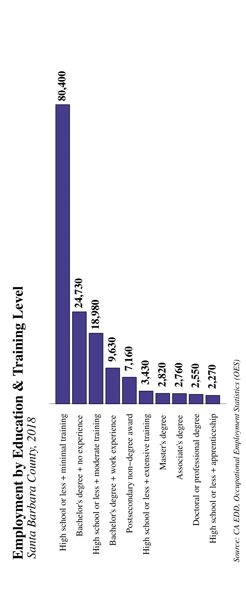
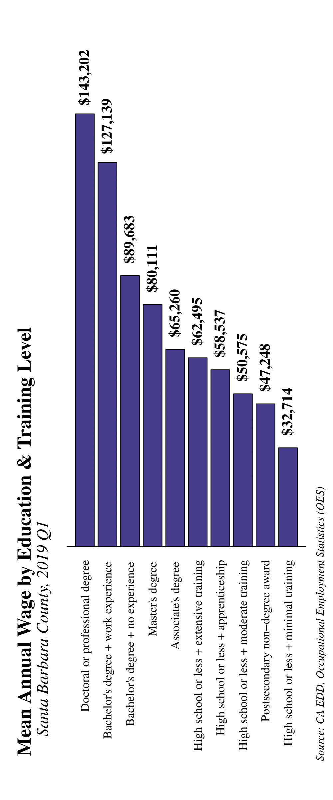
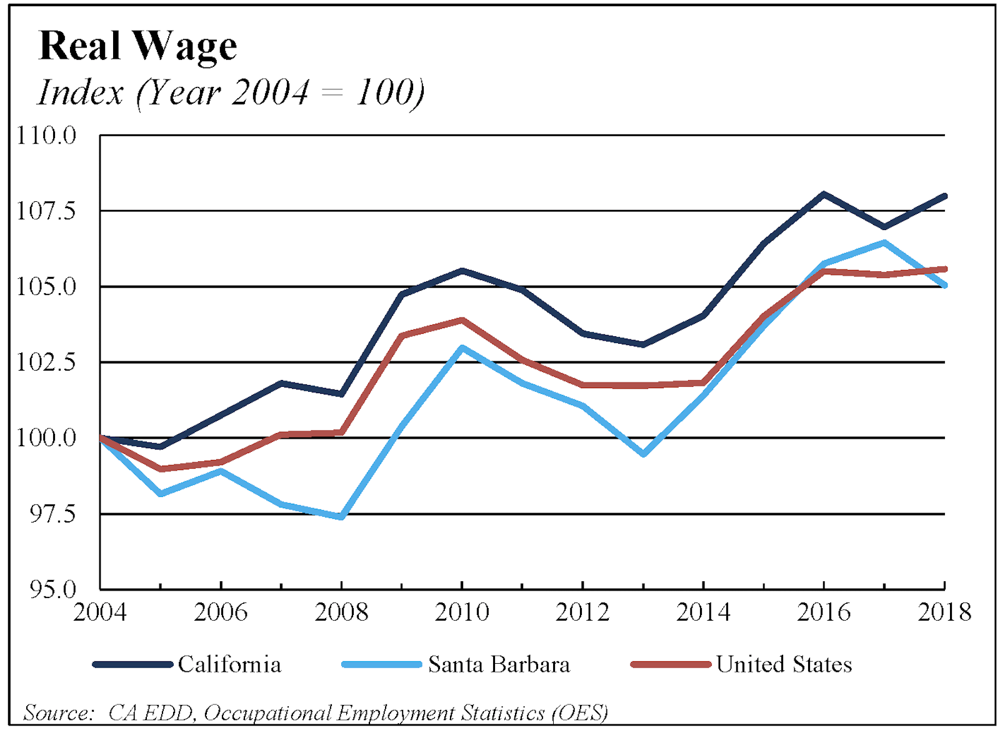
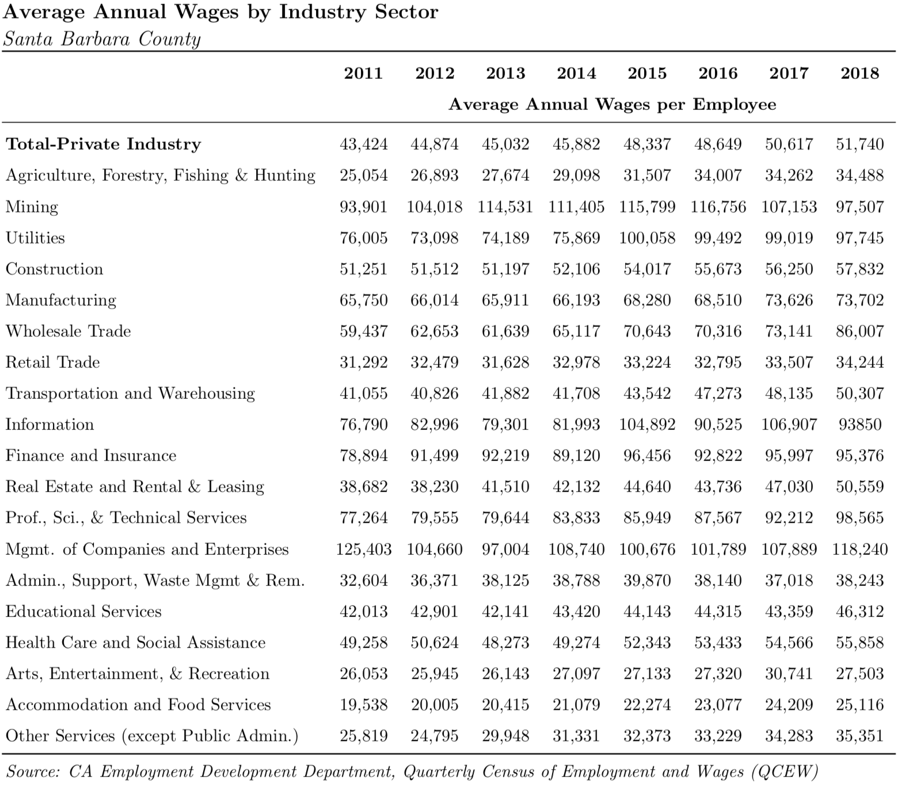

Chapter 5 Employment and Income
5.1 Employment
Key Points
- Santa Barbara County’s total employment for all industries grew by 3,547 jobs in 2019, a gain of 1.7%. This growth is slightly higher than the 1.12% growth rate in 2018.
- The unemployment rate decreased in 2019, falling by .27 percentage points to 3.49%. Buellton has the lowest unemployment rate in the county at 1.17% and Santa Maria has the highest unemployment rate in the county at 5.64%.
5.1.1 Santa Barbara County Employment
Santa Barbara County’s total employment for all industries continued to grow in 2019. Total Employment increased from 208,144 jobs in October 2018 to 211,691 jobs in October 2019. This gain of 3,547 workers represents an increase of 1.7%, which is higher than last year’s growth rate of 1.17%. Since December of 2012, Santa Barbara County has a net gain of 20,339 jobs, averaging an increase of 2,905 jobs each year. This is sign that the labor markets in Santa Barbara County are healthy.
Nonfarm payroll in California increased in 2019, at a rate of 2.17%. This is slightly higher than the 2018 growth rate of 2%. Since December of 2012, nonfarm payrolls have increased in California by 18.3%. United States nonfarm payroll has also increased at a rate of 3.38%. This is slightly higher than the 2018 growth rate of 1.78%. Santa Barbara’s nonfarm payroll growth increased by 1.89%, which is slightly lower compared to California and the United States. This is higher than the 2018 growth rate of 1.16%. Nonfarm payroll is indexed to July 2009, and since the end of the recession, Santa Barbara’s nonfarm payroll gains (14.56%) have been lower than the Unites States’ (16.31%) and significantly lower than California’s (22.56%).

The number of unemployed workers and the unemployment rate has also improved in the past year. The unemployment rate dropped from a peak of 10.0% in November 2010, to 3.8% in October 2018, and based on the most recent data, 3.5% in October 2019. The number unemployed, defined as workers who are without work and are actively seeking work, has declined from a peak of 21,445 in November 2010, to 8,253 in October 2018, and then down to 7,602 in October 2019. This drop of 651 unemployed workers in the past year represents a decline of 7.9%. The declines in both variables have been gradually slowing down as the labor market returns to so-called “full employment”, loosely defined as the lowest possible level that will not cause inflation. If unemployment falls significantly, inflation will rise as employers compete to hire workers and push up wages too fast.
The size of the labor force in Santa Barbara County has decreased from October 2018 to October 2019 by 179 workers. This is a small decrease of less than .01%. Even though the decrease is minimal, it is important to note that Santa Barbara’s labor force is not growing significantly, even though unemployment continues to decrease.
5.1.2 Industry Data
The next three figures show employment growth for 12 industries in Santa Barbara County over the past year, three years and ten years. The height of each bar shows the growth rate and the width shows the percent of total employment for each industry for 2018, 2016, and 2009 respectively. Goods Producing had the largest employment growth with a 5.7% growth rate over the past year. Retail Trade saw the largest employment decline of -3.2% over the past year. Government remains the largest industry by employment, with 18.9% of total employment, followed by Education and Health Services (12.4%) and Leisure and Hospitality (13.2%).
Over the past three years, Professional and Business Services saw the largest increase in employment, with a three-year growth rate of 14.2%. Manufacturing and Retail Trade have seen employment declines over the past three years with declines of 0.5% and 5.6% respectively.
Since 2009, the percent of total employment for most industries has not significantly changed. . Goods Producing has fallen from the fourth largest industry to the sixth, as it now only has an employment share of 11%. Total Farm has increased its employment share from 9.8% to 11% as it now has the fifth largest employment share.
Employment shares by industry in California and Santa Barbara County are similar. In industries such as Goods Producing, Retail Trade, and Other Services, the difference in employment shares are less than a percent. The largest difference in employment shares between California and Santa Barbara are Total Farm, Government, and Professional and Business Services. In Total Farm and Government, Santa Barbara has an employment share that is larger than 9% and 4% respectively. California’s Professional and Business Services employment share is 4% larger than Santa Barbara’s.
Employment shares by industry have generally stayed the same within the past twenty years. The largest increase since 1999 is in the Education and Health Services industry, as their employment share has rose from 11% to 13%. Goods Producing, Retail Trade, and Financial Services have seen small declines since 1999.
The figures below that continue onto the next page depict the employment time series since 2007 for the following industries: Total Nonfarm, Total Farm, Goods Producing, Services Providing, and the six largest 2-digit industries in Santa Barbara County. The dark blue line shows the original data series reported by the California Employment Development Department (EDD), and the light blue line shows the seasonally adjusted data that the EFP has created. Some industries’ employment, like Total Farm, Leisure and Hospitality, Government, and Retail Trade, appear to be highly seasonal. Other industries, like Manufacturing and Education and Health Services, have almost no seasonal component. Employment in Leisure and Hospitality, Education and Health Services, and Professional and Business Services are all enjoying upward trends over this period. Employment in Goods Producing and Manufacturing has also seen recent upward trends after realizing declines after the Recession. Employment in Retail Trade has been declining since peaking in 2015.


5.1.3 City Data
Santa Barbara County is comprised of cities with diverse industry mixes and economic conditions. North County, which includes five cities (Buellton, Guadalupe, Lompoc, Santa Maria, and Solvang) and five census designated places (Los Alamos, Mission Hills, Orcutt, Santa Ynez, Vandenberg AFB, and Vandenberg Village), is typically poorer, has higher unemployment rates, and is more agricultural than South County. However, Buellton and Santa Ynez are exceptions to the first two of these differences. South County includes three cities (Carpinteria, Goleta, and Santa Barbara) and five census designated places (Isla Vista, Mission Canyon, Montecito, Summerland, and Toro Canyon). The following paragraphs will document differences in employment, unemployment rates, and industry mixes across cities.
Current unemployment rates are highest in Santa Maria (6.63%), Lompoc (5.26%), Carpinteria (4.13%), and Guadalupe (3.71%). Unemployment rates are lowest in Buellton (1.5%) and Goleta (2.44%). Unemployment rates in the other cities in the county range between 2.69% to 2.72%. Unemployment rates in all areas have declined significantly since 2010, when several North County cities had unemployment rates around 12%.
Industry employment differs substantially from city to city. We show the industry employment mix for each area in the figure on the next page. The length of the bar represents the percentage of an area’s employment coming from a particular industry. Some of the interesting facts that appear in this data are:
- Goleta has the largest share of employment in Durable Manufacturing at 11.9%. Carpenteria’s employment share in this industry has been increasing and it now has the second largest share at 8.7%.
- Government accounts for more than 20% of the employment distribution in all cities except in Santa Maria and Carpinteria.
- All cities have a small employment share in the Mining and Financial Services industries, as the employment shares lie between 0.95% an 2.7%
- Leisure and Hospitality have large employment shares in Santa Barbara and Santa Ynez Valley. In Santa Ynez it is responsible for 22% of all employment.
- Agriculture, Forestry, Fishing & Hunting is the largest industry based on employment in Santa Maria, with 30.1% employment in this one industry.

5.1.4 California Counties
Labor markets all across California vary significantly as counties labor markets are dependent on their geographical region. Santa Barbara’s labor market compares well to most counties in California. However, they aren’t as strong as some counties in Northern California, and specifically those counties in the Bay Area. This section will provide some data and a map visualization to show how labor markets differ across California’s 58 counties.
Santa Barbara’s unemployment rate (3.5%) is below California’s rate (3.9%). Santa Barbara has the 17th lowest unemployment rate between all California counties. The county with the lowest unemployment rate is San Mateo (1.8%), which is part of San Francisco’s Bay Area. The top five counties with the lowest unemployment are all from Northern California: San Mateo (1.8%), Marin (2.0%), San Francisco (2.0%), Santa Clara (2.3%), and Sonoma (2.4%). The three counties with the highest unemployment rate in the state are Imperial County (20.6%), Colusa County (10.5%), and Tulare County (8.5%). These counties also had the largest unemployment rates in 2018 as well. No other California counties have unemployment rates above 8%. Most California counties’ unemployment rates fall between 3.1% and 5.2%.

Most California counties saw a decrease in their unemployment rate compared to 2018 levels. Colusa County saw the largest decrease in the unemployment rate (-1.37 percentage points) and Imperial County experienced the largest increase in the unemployment rate (2 percentage points).
Santa Barbara’s nonfarm payroll grew by 1.3%, which is lower than California’s growth of 2%. Santa Barbara had the 17th lowest growth rate in the state, however the growth from 2018 levels was higher than the growth from the year prior, as Santa Barbara was had the 8th lowest growth rate in the state. The strongest growth in nonfarm payroll were in Sierra County (11%), El Dorado County (4.3%), Placer County (3.9%), and San Francisco County (3.9%). Only two counties had declines in nonfarm payrolls over the past year: Alpine County (-7.8%) and Solano County (-0.01%). Eleven counties saw nonfarm payroll grow over 3% annually.

5.1.5 Firm Size Data
Since 2008, firm size distribution in Santa Barbara has remained relatively the same. In 2018, the most common number of employees at a firm in Santa Barbara is between 20-49 employees, and this has been unchanged since 2008. Even though it is still the most common number of employees, the proportion of firms with this range of employees has decrease from the 2008 level of 21.6% to 20.3% in 2018. Firms with 50-99 employees saw the greatest decline in firm size distribution since 2008. In 2008, firms with 50-99 employees accounted for 16.5% of firm size distribution, where in 2018; these firms only account 14.8% of firm size distribution.
In 2018, firms with 500+ employees had the largest average payroll expenditure per employee at $16,047. Looking across all different firm sizes, we can see that payroll per employee has increase in every firm size category. The largest changes in payroll per employee were in firms with 250-499 employees and firms with 100-249 employees. These firms saw payroll per employee increases of 41.8% and 30% respectively.
In Santa Barbara County, 34.9% of employees work for firms that employ over 100 workers. This is 10.3 percentage points less than California County, where 45.2% of employees work for firms with over 100 workers. In Santa Barbara County, the Agriculture industry has the greatest number of workers in firms with over 100 employees (44.5%). We can also see that most Services employees work for firms with 20-49 employees (23.6%), which is larger than the Santa Barbara County average distribution of employees in firms of that size.
Santa Barbara County’s firm size distribution difference between California’s is the proportion of workers in small businesses. For California, 54.8% of employees work in firms with less than 100 employees. The distribution is much larger in Santa Barbara County, where 65% of employees work in firms with less than 100 employees. Besides the difference in employee distribution in firms with less than 100 workers, Santa Barbara County and California’s firm size distribution are similar. The only major difference is in firms with 1000+ employees, as 14.5% of California employees work in firms of the largest size. Only 4% of Santa Barbara employees work in firms with 1000+ workers.
5.2 Employment Forecast
Key Points:
- Nonfarm Payrolls are expected to grow at a rate of 1.04% in the upcoming year, an increase of 1,993 jobs. This suggests continued improvement at an decreasing rate from 2019.
- Our statistical forecast suggests a December 2020 unemployment rate of 3.10%, an increase of 0.25 percentage points. The 95% confidence interval spans from a low of 1.59% to a high of 4.62%.
The forecasting methods used in this section are based on the Census Bureau’s X-13ARIMA-SEATS seasonal adjustment program. Their program can be used to forecast a series using only its statistical features. Each employment series has a seasonal component (the December effect for retail trade is one example), a trend component (like the long-run downward trend in goods-producing industries or a multi-year recession), and an irregular component (a one-month bump or decline in the series for reasons that will not occur again, like the 2012 Olympics producing a one-month bump in the London economy). After decomposing a time-series into these three components, the current trend component and seasonal component can be used to forecast the series. While the irregular series cannot be predicted, since it has an expected value of zero, and systematic changes to the trend and seasonal components also cannot be predicted, the history of how these components have varied in the past can be used to generate confidence intervals.
Each figure in this section shows the recent unadjusted and seasonally adjusted series followed by a three-year forecast. This forecast describes the most likely values for the unadjusted series. The dashed lines surrounding the forecast describe the 95% confidence interval. There is a 5% chance that values will occur outside of these dashed lines. Unless otherwise noted, each of the following year-over-year projections that we describe in the text will be between January 2018 and January 2019 for the unadjusted series.

Total employment for all industries is projected to continue improving over the next three years. In 2019, our statistical forecast predicts a gain of 2,873 jobs (1.37%). This is slightly more growth than the respectable 1.16% seen in 2019. The 95% confidence interval includes a range of predictions of anywhere from a -2.7% decline to a 5.4% gain in the following year. Overall, in the next three years, we are expected to see average annual gains of 2,889 jobs per year and an average annual growth rate of 1.36 %.
The unemployment rate over the next year is projected to continue its recent downward trend. Between December 2018 and December 2019, the unemployment rate declined by 0.4 percentage points. Our forecast predicts a further decline over the next year, with the unemployment rate declining to 3.10%, a decline of 0.30 percentage points between December 2019 and December 2020. The confidence interval includes possible unemployment rates between 1.59% and 4.62%.
Among industries, the X-13 statistical forecast expects growth in a majority of the industries we depict in the following two pages. Of these industries, retail is expected to have the weakest performance, expecting to decline by 0.7%, and construction employment is expected to have the largest growth, increasing by 2.0%. The growth in farm is expected to continue in for the next three years, with an average annual growth rate of 1.98%.
5.3 Occupations
The largest occupation in Santa Barbara County is Office and Administrative Support with 24,780 workers. Between 2017 and 2018, this occupation decreased by 1,430 jobs. This occupation is one of lower paying jobs among the top ten largest occupations in the county, with a mean annual wage of $43,768. The lowest-paying occupation among the top ten largest occupations is Food Preparation and Serving-Related Occupations, with a mean annual wage of $29,559. Only two of the top ten largest occupations, Management and Healthcare Practitioners and Technical Occupations, have a mean annual wage above $100,000. Architecture and Engineering, which was not among the top ten largest occupations in 2018, have the next highest mean annual salary of $103,115 in quarter 1 of 2019.

Within the county, the vast majority of jobs only require high school or less with minimal training (80,400). This group comprises 52% of the jobs in the county that have reported education and training requirements. The second largest education group is bachelor’s degree with no experience (24,730). Only 25.7% of jobs in the county require a bachelor’s degree or more. Recent employment projections, described in the 2019 Economic Forecast Project book, suggest that this employment composition will remain constant over the next ten years, with the vast majority of new jobs having minimal educational and training requirements.
Among education groups, the jobs requiring a Doctoral or professional degree have the highest mean annual wage at $143,202. This is a change from the 2018 where jobs requiring a Bachelor’s degree with some work experience had the highest mean wages. For the most part, education & training groups with more requirements pay more, except for postsecondary non-degree award jobs. High school or less with minimal training jobs pay the lowest mean annual wages ($32,714). This is 35% less than the second lowest education & training group, high school or less with moderate training, and 64% less than the mean annual wage for a bachelor’s degree with no experience.


In addition to providing data for individual occupations, the Occupational Employment Statistics (OES) also aggregates occupations into 22 occupation groups. A summary of the data for these occupation groups is provided in the following pages. Office and Administrative Support is the largest occupation group, with 24,780 jobs, and Food Preparation and Serving-Related Occupations is the second largest group, with 24,040 jobs. Food Preparation and Serving-Related Occupations saw a modest 8.1% employment increase in 2018. The occupation group that saw the largest increase in employment is the Construction and Extraction Occupations group. This group saw employment increase by 770 jobs, which is an 11.1% increase from 2017. Annual wages for the majority of occupations increased in 2018, with the exception of seven occupation groups. Community and Social Services Occupations had the largest wage increase of 10.1%. There was also strong growth in mean annual wage among Transportation and Moving Material Occupations, with a gain of 7.2%.
The summary statistics table also displays the log 75-25 wage ratio. This represents the log of the ratio of the 75th percentile hourly wage within an occupation to the 25th percentile hourly wage. This is a commonly used measure of wage dispersion. Farming, fishing, and forestry has the lowest 75-25 ratio, at 0.08, meaning the majority of workers in this occupation earn a wage close to the mean wage of $12.96 per hour. The group with the most wage dispersion is Protective Services Occupations, which includes police officers, firefighters, and detectives, among other occupations.

5.4 Income
Key Points:
- Real per capita income in Santa Barbara County rose in 2018 at 2.62%.
- A 3.28% growth rate of California’s real per capita income resulted in a per capita income of $54,441, which is slightly higher than Santa Barbara’s real per capita income of $53,568.
- The number of families in poverty in Santa Barbara county is estimated to have declined by about 11% in the previous year
- Buelton experienced the highest median income growth rate in the Santa Barbara County, at 4.75%.
Santa Barbara County’s real per capita income increased in 2018, from $52,199 to $53,568. The real per capita income growth rate in 2018 was 2.62 %, which is higher than last year’s growth of 1.66% (The BEA has adjusted its calculations of previous years’ per capita income since our last publication). The rate of growth in Santa Barbara was below California’s growth for 2018, 3.28%, and slightly above the United States’, at 2.54%. US, California, and Santa Barbara County real per capita growth all accelerated in 2018. California grew from 2.00% to 3.28%, and the state’s real per capita income remains above Santa Barbara County’s real per capita income- this trend has been true since 2016.

Per capita net earnings make up the majority of per capita personal income in the United States, California, and Santa Barbara. Per capita net earnings describe wages and salaries, supplements to wages and salaries (employer contributions to pensions and insurance funds), and proprietors’ income less contributions for government social insurance and an adjustment to convert earnings from place of work to place of resident. In California and the United States, this component represents about 64% and 63% of per capita income respectively. However, in Santa Barbara, this component only represents 57% of per capita income.

The second largest factor in per capita income is formed by dividends, interest, and rent. Dividends, Interest, and rent made up 31% of Santa Barbara’s per capita income, 22% of California’s, and 21% in the United States in 2018. This difference can be attributed to Santa Barbara County’s unusually high income distribution; wealthier people typically earn a higher proportion of their income from investments, which produce dividends, interest, and rents, than lower-income people.
Hourly wages in Santa Barbara grew nominally by 1.1%, from $26.70 to $26.99. Real wages for workers in community & social services occupations and transportation occupations grew the fastest over the past year, with growth rates of 7.49% and 4.70% respectively. Within the county, management occupations experienced the largest real hourly wage decline from 2017 to 2018, losing 6.83%. This is a stark departure from the increasing trend over the previous 5 years. However, management occupations still had the highest real wages in 2018 at $54.37 per hour compared to the average across all occupations of $24.18.

SiteReports provides the Economic Forecast Project with data to look at income distributions across Santa Barbara County. In 2020, the amount of families below the poverty line declined in Santa Barbara County from 8,909 to 7,929 for an 11% decrease. The number of families under the poverty line is disproportionally located in North County, which experienced an increase from 5,079 in 2019 to 5,475 in 2020. South County experienced a decrease in families under the poverty line by 278 families – 2,731 in 2019 to 2,453 in 2020.


Across Santa Barbara county, changes in nominal median household income ranged from 16.35% in Buelton to 8.50% in Carpinteria. This growth in Buelton of about $12,702 puts their median income well above the median in Santa Barbara County. The County’s median income of $79,015 grew modestly by a net of $7,471 or a growth percentage of 10.44%. Consistent with prior years, Goleta has the highest median household income in Santa Barbara County at $104,565 and Lompoc has the lowest, at $56,298.
